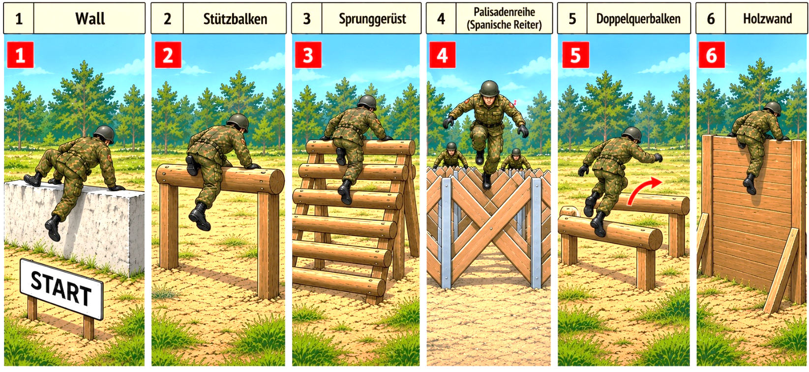
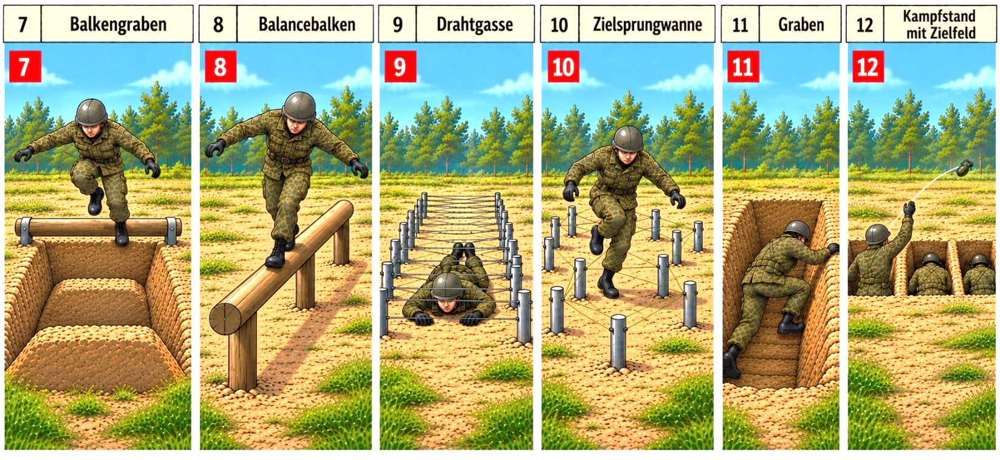
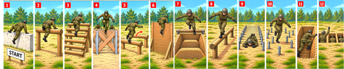

Die Hindernisbahn – Teil 1

Wie lauten die Artikel? Nutzen Sie Ihr Wörterbuch.
WAS MÜSSEN DIE SOLDATEN MACHEN?
| Nr. | Hindernis | Beschreibung |
|---|---|---|
| 1 | Wall | Der Soldat muss über den Wall klettern. |
| 2 | Stützbalken | Der Soldat muss über den Balken klettern. |
| 3 | Sprunggerüst | Der Soldat muss auf das Gerüst hinaufklettern* und auf der anderen Seite hinunterklettern oder hinunterspringen*. |
| 4 | Palisadenreihe | Der Soldat muss über/durch die Palisadenreihen klettern. |
| 5 | Doppelquerbalken | Der Soldat muss auf den ersten Balken springen und von dort über den zweiten. |
| 6 | Holzwand | Der Soldat muss die Wand hinaufklettern und über die Wand steigen. Dann muss er auf der anderen Seite hinunterspringen*. Man nennt das auch Eskaladierwand. |
* hinaufklettern = hochklettern hinunterspringen = runterspringen
hinunterklettern = runterklettern
Die Hindernisbahn – Teil 2

Wie lauten die Artikel? Nutzen Sie Ihr Wörterbuch.
| Nr. | Hindernis | Beschreibung |
|---|---|---|
| 7 | Balkengraben | Der Soldat muss über die Balken und den Graben springen. |
| 8 | Balancebalken | Der Soldat muss über den schmalen Balken balancieren. Er darf nicht herunterfallen*. |
| 9 | Drahtgasse | Der Soldat muss unter den Drähten hindurchkriechen*. Er darf die Drähte nicht berühren. |
| 10 | Zielsprungwanne | Der Soldat muss durch die Wanne laufen und darf nicht an den Drähten hängenbleiben. Man nennt das auch 'Stolperdraht'. |
| 11 | Graben | Der Soldat muss in den Graben springen, durch den Graben laufen und am Ende aus dem Graben klettern. |
| 12 | Kampfstand | Der Soldat muss in den Kampfstand steigen. Dort übt er den Handgranatenwurf. |
* herunterfallen = runterfallen hindurchkriechen = durchkriechen
Arbeitsblatt: Die Hindernisbahn (A1/A2 – Verben der Bewegung)
Aufgabe: Was machen die Soldaten? Sehen Sie sich die Bilder 1–12 an. Ergänzen Sie das passende Verb in der richtigen Form.

balancierenspringen (2x)kriechenspringen + kletternlaufenklettern (4x)klettern + springenwerfen
Was macht der Soldat …
Übersicht: Verben und Präpositionen
| Verb | Präposition / Ergänzung | Beispiel |
|---|---|---|
| springen | über + Akkusativ | über einen Graben springen |
| springen | in + Akkusativ | in einen Graben springen |
| springen | von + Dativ | von einem Balken herunterspringen |
| klettern | über + Akkusativ | über eine Mauer klettern |
| klettern | aus + Dativ | aus einem Graben klettern |
| kriechen | unter + Dativ … hindurch | unter einem Draht hindurchkriechen |
| laufen | durch + Akkusativ | durch einen Graben laufen |
| laufen | zwischen + Dativ … hindurch | zwischen den Balken hindurchlaufen |
| balancieren | über + Akkusativ | über einen Balken balancieren |
| steigen | über + Akkusativ | über ein Hindernis klettern/steigen |
| steigen | in + Akkusativ | in einen Kampfstand steigen/springen |
| schießen | auf + Akkusativ | auf ein Ziel schießen |
Ergänzen Sie die passende Präposition.
Was macht der Soldat …